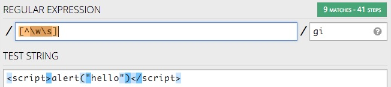
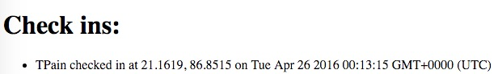
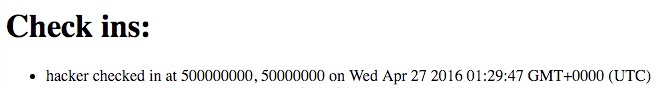
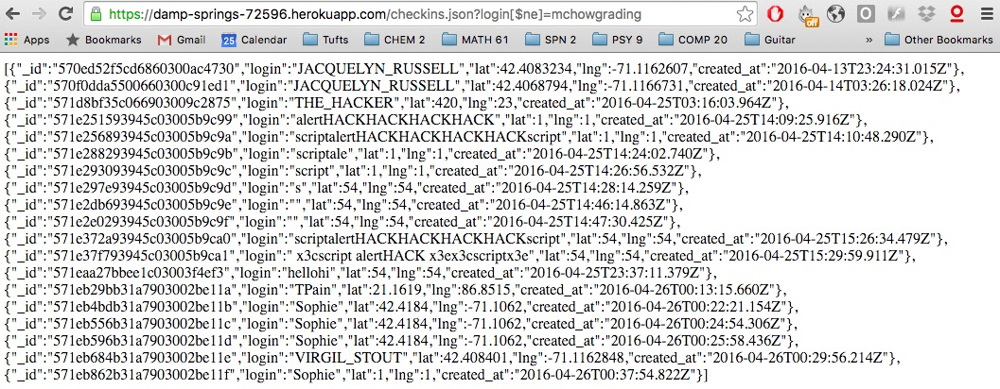
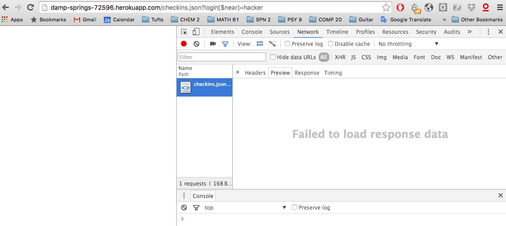
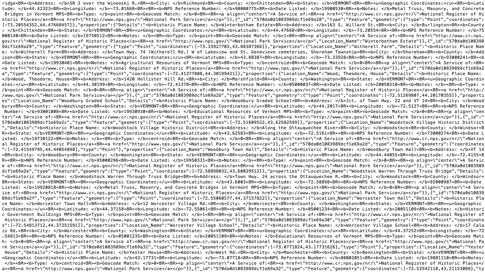

By Sophie Loman • April 26, 2016
Review of Danny Garfield's COMP 20 Assigment 3 code.
This is an review of Danny Garfield's COMP 20 Assignment 3 code. Assignment 3 specified that a web application be built to take in login parameters and store them in a database and provide data on nearby historic landmarks as a response. The guidelines required the application to handle GET requests to '/' and 'checkins.json' and POST requests to '/sendLocation'. This report offers an assessment of the security and privacy vulnerablities in Danny's server.js code and offers recommendations about how to protect against these vulnerabilities.
I first did some black-box testing to check for any obvious XSS vulnerabilities, using curl to send potentially malicious POST data to the server. When my efforts failed to reveal any such threats, I reviewed Danny's code to see the protections he had put in place and to look for other ways to attack the server. I then began playing with the MongoDB queries that could be applied to '/checkins.json' and connected my Assignment 2 code (displaying a map with user checkins and nearby landmarks) to his server to assess other aspects of its performance.
Danny successfully secured against many major cross-site scripting vulnerabilities (a type of security problem that might lead to the display of malicious content, and other such issues), but allowed for arbitrary queries to be made to the database connected to the server, allowing for an unexpected manipulation of content and a possible failure to load any data at all. Additionally, the server sends the client more data than expected, which could result in loading time and privacy issues.
Affects: '/' route
Severity: Low. The data is only minimally changed.
Danny successfully prevented me from defiling his webpage using cross-side scripting by sanitizing user input to /sendLocation with this line of code: "person.login = person.login.replace(/[^\w\s]/gi, '');" This removes any character that is not a word character, digit, or underscore. As can be seen below, this secures against any XSS attempts.
Though helpful in preventing major threats to the site, this measure also prevents users from inputing data that would otherwise be a valid input. For instance, no one may have a hyphenated name in their login:

Recommendations: Potentially dangerous characters could be converted to alternate forms before inserting the data into the database (changing '>' to '$gt', for instance).
Affects: '/' route and Assignment 2 webpage
Severity: Moderate. The data displayed is inconsistent and nonsensical, but both pages still load.
Though his data is fairly well validated, the client can send data that doesn't make sense, such as huge numbers for the latitude and longitude. This data will be inserted into the database and appear on the "Check ins" page, but will not be rendered on the map (when connected with Assignment 2).
Recommendations: The data sent to '/sendLocation' should be further validated to ensure latitudes and logitudes that make sense.
Affects: '/checkins.json' route
Severity: High. The user could simply run an arbitrary query like $ne, but could also prevent any data from loading, and could possibly cause the server to run a JavaScript function using the $where operator.
The server allows for any operator applied to the login query, allowing for unexpected flexibility in wat data is presented. For instance, here, all login information except that for 'mchowgrading' is presented:
More seriously, a nonsense query operator could be applied, causing the server to fail to load response data:
Recommendations: Check for unexpected query operators before applying the query to the database.
Affects: '/sendLocation' route and Assignment 2 webpage
Severity: Low. This mostly affects the time it takes for the page to load.
The server sends back all of the locations in its database, instead of only those within a mile of the given location:
This causes the server to take a long time to produce a response, making the load time for the Assignment 2 webpage unecessarily long as well. The server is also providing the client with more information than is necessary, which raises the potential for mistakes on the client side (the client might accidentally display a landmark outside of the appropriate radius if they assumed that the server had given only landmarks in the desired radius).
Recommendations: Use geospatial queries in server.js!
User input needs to be sanitized further in order for the server to run precisely as expected. In addition, methods of protection need to be considered more carefully, to allow for maximal flexibility while still preventing major security issues. Finally, the server should not be providing any additional data outside of that which the client is expecting!